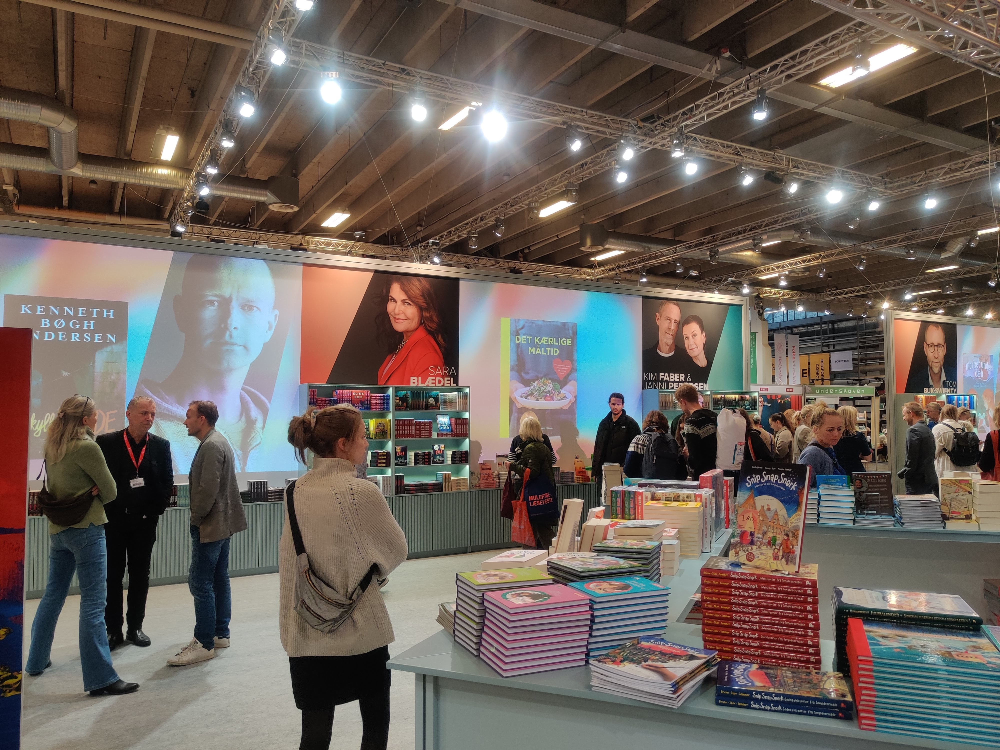
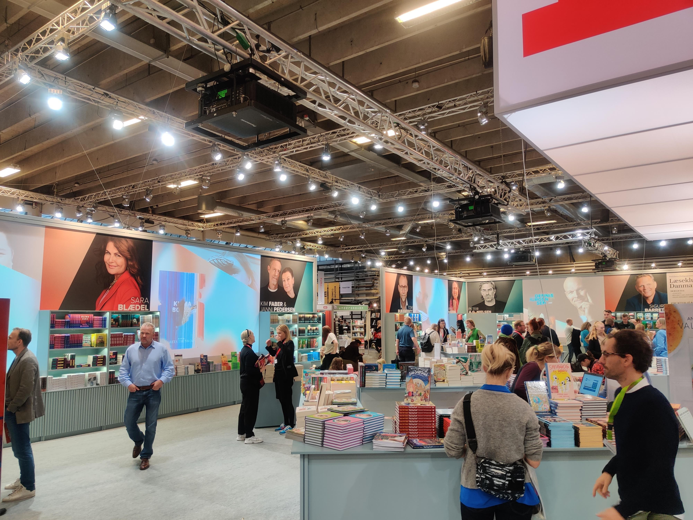
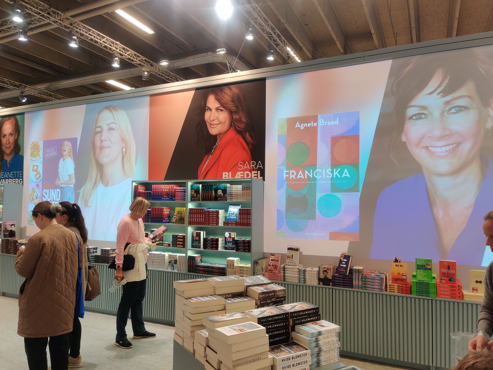
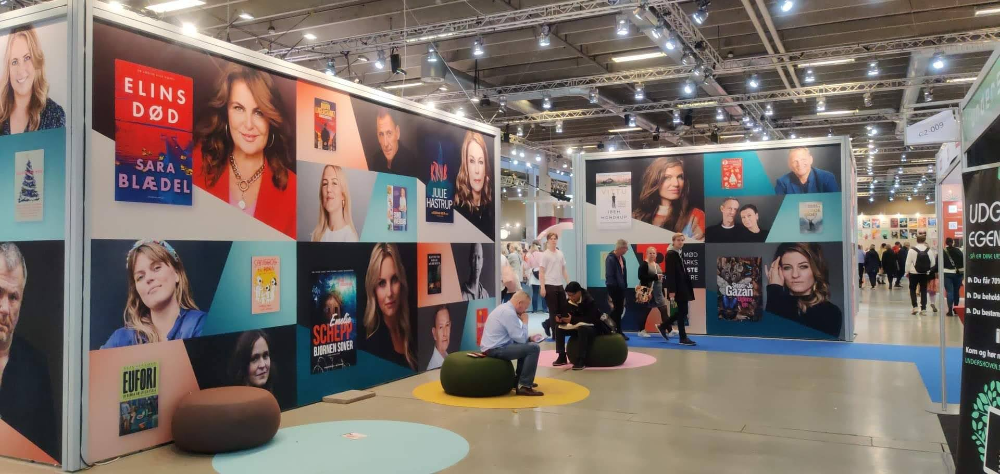
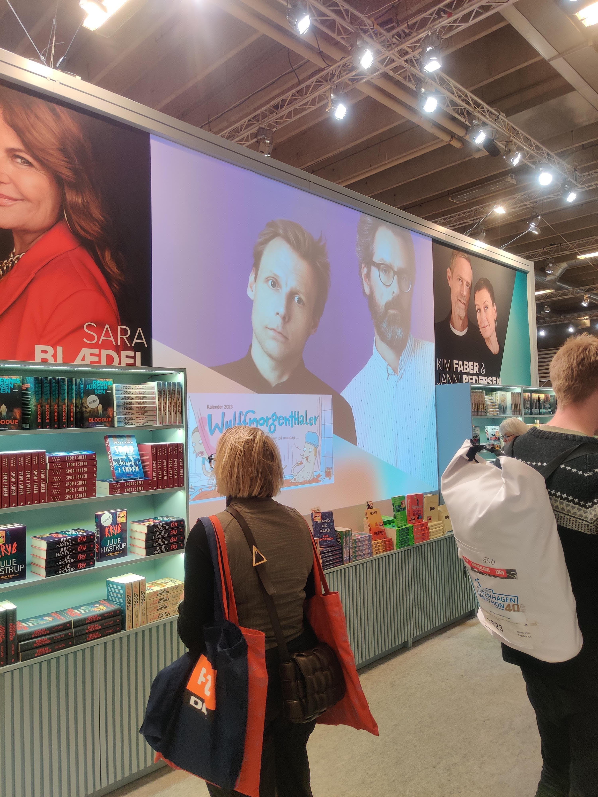

Politikens Forlag has one of the largest author rosters in Denmark. The challenge at Bogforum was simple but real: how do you give every author a genuine moment on the stand, without the display feeling cluttered or any one name overshadowing the rest?
The solution was a single, continuous video — projected across the front walls of the stand on four separate projectors, each starting at a different timestamp. The result was a seamless loop where no two walls ever showed the same author at the same time, giving every name equal billing across the full stand simultaneously.
Each sequence used a diagonal graphic element that swept across the frame, sliding one author out as a new one moved in — the book cover bleeding out and replacing at the same time. The back walls, where projection wasn't possible, were handled in large-format print using the same diagonal shapes and gradient palette to tie the whole stand together visually.
The stand overview — one continuous video running across four projectors, each starting at a different timestamp. No two walls ever show the same author.
When a book had multiple authors, showing all of them wasn't possible. Instead the book took centre stage — cropped large, no author portrait, full focus on the cover.
when in doubt, let the book speak ↑



Above the tall bookshelves, where projection wasn't possible, smaller print panels carried the same visual language — diagonal shapes, gradient backgrounds, author and book side by side. The same system, different medium.
← print + motion, one language